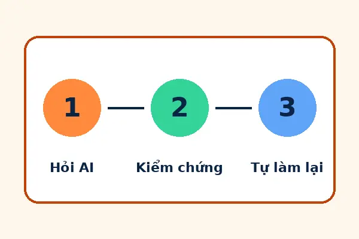

Giới thiệu
Học Cùng AI giúp sinh viên 18–24 tuổi hiểu AI và AI Agent là gì, biết dùng chúng để học và làm việc hiệu quả hơn, đồng thời giữ được tư duy phản biện và các kỹ năng nền tảng.
Chúng tôi viết cho ai?
- Minh Anh, 20 tuổi, năm 2 Quản trị kinh doanh: cần học nhanh cách dùng AI cho bài tập nhóm và biết giới hạn để tránh đạo văn.
- Quốc Khang, 22 tuổi, năm 4 Công nghệ thông tin: dùng điện thoại với 4G hạn chế, bị khiếm thính mức trung bình nên cần phụ đề và bản chữ cho mọi video, âm thanh.

Cam kết về truy cập
- Mọi video có phụ đề WebVTT tiếng Việt và bản chữ; không dùng âm thanh làm kênh thông tin duy nhất.
- Video và âm thanh không tự phát; có nút điều khiển bằng bàn phím.
- Chữ và nền có độ tương phản từ 4,5:1 trở lên; hiệu ứng chuyển động tắt khi bạn bật “giảm chuyển động” trong hệ điều hành.
- Ảnh có văn bản thay thế (alt); menu báo rõ trang đang xem bằng cả màu, độ đậm và gạch chân.
Nguồn và giấy phép media
| Loại | Nguồn | Giấy phép |
|---|---|---|
| Ảnh, logo, infographic | Nhóm tự thiết kế bằng Python (Pillow) | Nhóm sở hữu |
| Video giới thiệu, video bài giảng | Nhóm tự dựng bằng ffmpeg từ ảnh tự thiết kế | Nhóm sở hữu |
| Giọng đọc | Giọng tổng hợp espeak-ng (tạm thời, sẽ thay bằng giọng thu thật) | Dùng nội bộ cho bài tập |
| Icon menu, phát, phụ đề | Tự vẽ bằng SVG | Nhóm sở hữu |